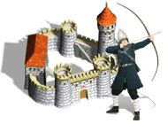

 Игры от Алавар / Alawar
Язык интерфейса: русский
Размер игры: 23.27 мб
Пошаговая стратегия в средневековом стиле.
Описание:
В этой пошаговой стратегии вам предстоит совершить увлекательное путешествие в средневековую Европу. В те лихие времена спокойствие оставило эти края: по дорогам шатались банды разбойников, а в лесных чащах можно было запросто встретиться с упырем, призраком или другой нежитью. Неспокойнои в городских стенах: всюду зреет заговор и измена. Среди этого хаоса и начинаются ваши приключения. В начале игры вам необходимо выбрать себе персонажа. Это может быть Рыцарь, Архимаг или Следопыт. У каждого из них свои особенности, свои навыки и умения (в том числе и магические). После этого время выбрать игровой сценарий. Всего их во ”Временах раздора” 6, и каждый из них таит в себе множество сюрпризов и неожиданностей. Но прежде чем покинуть стены родного замка, будет нелишним пройти обучающий сценарий и получше познакомиться с особенностями игрового процесса. Каждый уважающий себя герой для начала должен обзавестись верным войском. Нанять его можно в замке или церкви. Однако помните, что без денег армия не будет сражаться, а в одиночку воевать с разбойниками или монстрами крайне проблематично. Чтобы добыть золота - наведайтесь в ближайшие деревни и соберите дань. Кроме того, звонкую монету (а также снаряжение) можно отбить у врага. Также полезно изучить в церкви старинные манускрипты и узнать секреты боевой магии, которая очень пригодится в грядущих битвах. Как следует вооружившись, вы можете без страха отправиться в самостоятельное путешествие, или же поступить на королевскую службу. Любой путь таит в себе немало приключений, пройдя которые вы навеки покроете свое имя неувядающей славой, а молва о ваших подвигах долго еще будет передаваться из уст в уста. Мы рекомендуем эту игру всем поклонникам ролевых пошаговых стратегий.”Времена раздора” подарят опытным игрокам немало приятных минут, а начинающие искатели приключений смогут освоить многие примудрости ведения рукопашных схваток и научиться создавать непобедимые армии.
Особенности игры: